MASUDUL HAQUE
December 2005, Utrecht
This report was written in December 2005. It describes in considerable detail the status of my various research projects at that time, some under way, some planned, some completed. Please keep in mind that, with time, research interests move up or down in priority, projects get finished or abandoned, etc.
In this statement, I put together descriptions of some research
efforts I have been involved in, including some unfinished projects.
I also explain the motivations and preliminary thoughts for some new
research directions. Planned and ongoing projects are explained more
elaborately than completed work, because details of the latter can be
found in my
preprints on the archives.
A shorter, much less detailed version is available in my "Research
Statement"
Since mid-2005, experimentalists have tried to produce Fulde-Ferrel-Larkin-Ovchinikov (FFLO) states by placing unequal numbers of two hyperfine states of an atomic species in a trap, using Feshbach-resonant conditions under which the atoms would pair up in the case of equal populations.
Our calculations started after getting early data from R. Hulet (Rice University) in September 2005. We have local density approximation (LDA) arguments showing that, for large enough population differences, the dominant effect is a phase separation (Fig. 1). The two species densities are locked equal in the inner BCS core. Outside, there is a shell of normal phase which mostly consists of the majority species. If there is an FFLO phase, it is confined to a shell-shaped region bordering the BCS core and the outer normal shell.
Our LDA calculations without any intermediate shell already reproduce
the density profile of the majority species very well, but the
minority density profile differs quantitatively from the simplest
calculation. We are currently investigating whether this is due to an
intermediate shell of FFLO or bi-component un-paired phase.
I expect a paper to be written and submitted around mid-January
2006.
A novel class of experiments made possible with ultracold atomic systems is to ramp or sweep physical parameters at time scales fast compared to the typical dynamics in the system, and then observe the evolution after and during the ramp. In Utrecht with Henk Stoof, I analyzed two such non-equilibrium problems related to Feshbach resonances.
First, we considered the response of a molecular Bose-Einstein condensate (BEC) near a Feshbach resonance to magnetic-field sweeps toward and across the resonance, calculating details of the dissociation process [1]. During our study, two experimental reports appeared, describing exactly this kind of experiment. Our approach is based on an equation of motion for the molecular BEC order parameter (complex Gross-Pitaevskii wavefunction). This approach allows us to calculate the order parameter evolution and the energy spectrum of the dissociated atoms for essentially arbitrary type of sweep.
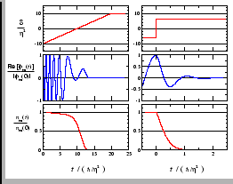 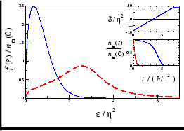 |
Second, we later investigated the dynamics of a molecular condensate after excitation by a resonant laser probe, using a generalization of the same equation of motion. One interesting result was that this kind of probe can detect features of the molecular density of states that would not be accessible in equilibrium or in linear-response situations. These calculations are unpublished at the moment, but I hope to get back to them in spring 2006.
I studied rotating trapped Bose condensates with a single vortex in 1999 at Rutgers with Andrei Ruckenstein, and then in 2004 was loosely involved with a Ph.D. student's work with Henk Stoof on vortex lattice melting. Although I have never published on vortex physics, it has been a long-term interest and I hope to find some time for it before I leave Utrecht.
In early 2005, I was involved in putting forward a theoretical proposal to create a three-dimensional, non-relativistic version of what high-energy theorists call a ``superstring'', using cold-atom experimental technologies which are now almost standard. We described the atomic-physics aspects in Ref. [2].
A superstring in high-energy theory is a 1+1 dimensional object embedded in ten dimensions, with a fermionic field living on the string. The fermionic field has the same relativistic spectrum as the bosonic transverse oscillation modes of the string. The high dimensionality is not required in the non-relativistic limit.
Our proposal uses a quantized vortex in a Bose condensate as the stringy object, in a periodic geometry where the transverse oscillation modes (kelvons) are particle-like (quadratic), and thus can be made supersymmetric with fermionic atoms placed in the vortex core. We worked out the laser parameters required for the supersymmetry of the quadratic fermion-boson Hamiltonian. (Note that in superstring theory, the supersymmetric Lagrangian is quadratic.)
One can also, with an additional laser, tune the kelvon-fermion
interactions to the kelvon-kelvon interactions, thus leading to the
kelvon( )-fermion(
)-fermion( ) Hamiltonian:
) Hamiltonian:

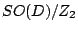
(nematic) symmetry in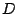
dimensions.
Ref. [3] proposes a Hamiltonian that features a  Pomeranchuk instability. The interaction has the form
Pomeranchuk instability. The interaction has the form
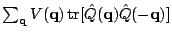
, where the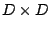
matrices and bilinear in the fermions. Another interaction potential designed to produce the same instability, by Jorge Quintanilla (Rutherford Lab, U.K.) and A. J. Schofield (Birmingham, U.K.), is a non-monotonic central potential with structure at a finite inter-fermion distance. The distance can be chosen to favor a particular angular-momentum channel.I started studying Pomeranchuk instabilities in late 2004, and by early 2005 I had some ideas for the finite-temperature behavior of the model of Ref. [3] for
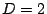
. In summer 2005, I met J. Quintanilla and we decided to collaborate on working out details of the finite-temperature phase diagram. We are studying the mean-field theories for both the above-mentioned models exhibitingThe finite-temperature phase diagram contains a transition of the Kosterlitz-Thouless (KT) type and a crossover at higher temperatures, corresponding respectively to the disordering of phase and amplitude degrees of freedom. A semiclassical physical picture may be obtained by considering local Fermi surfaces. In the symmetry-broken phase, these are distorted, and thus may be regarded as elliptical (rod-like) objects analogous to liquid-crystal nematogens. The KT transition corresponds to the disordering of the directors of these ``nematogens''. The higher-temperature crossover corresponds to the loss of directors of the nematogens themselves; i.e., above the crossover the Fermi surfaces are not distorted even at the smallest length scales. We calculate this temperature scale by calculating the mean-field transition temperature (
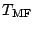
), although physically this is a crossover rather than a real phase transition.|
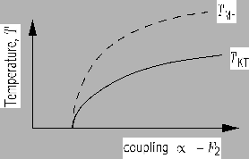 |
The concept of entanglement, primarily studied in the context of
quantum computation, has been applied recently for the
characterization of quantum many-body states. In particular, the
entropy of entanglement
 for a many-body state
for a many-body state
 provides information complementary to that obtained from
traditional measures of correlation, namely the
provides information complementary to that obtained from
traditional measures of correlation, namely the  -particle
correlation functions. To define bipartite entanglement, the system
is partitioned into subsystems (
-particle
correlation functions. To define bipartite entanglement, the system
is partitioned into subsystems ( and
and  ). Then
). Then
 is
the von Neumann entropy of the reduced density matrix
is
the von Neumann entropy of the reduced density matrix
 ; thus
; thus
 . The scaling of
. The scaling of
 with the size of the
partition
with the size of the
partition  is becoming a popular method of characterizing the
quantum state
is becoming a popular method of characterizing the
quantum state  .
A lot is already known about the entanglement entropy of
one-dimensional systems, although open questions remain. For higher
dimensional systems, entanglement entropy is far less studied.
.
A lot is already known about the entanglement entropy of
one-dimensional systems, although open questions remain. For higher
dimensional systems, entanglement entropy is far less studied.
For spin systems, partitioning the spins is equivalent to partitioning
the sites. On the other hand, for models with itinerant particles
(e.g., a Hubbard or  -
- model), one can ask whether one should
partition the particles into two groups, or partition the sites into
two segments of the lattice, in order to get a physical measure of
entanglement. Similarly, for quantum Hall states, one could partition
either the particles or the angular-momentum orbitals. We have come
to understand that this issue has not been addressed properly; both
kinds of partitioning have been used without proper justification. We
plan to calculate
model), one can ask whether one should
partition the particles into two groups, or partition the sites into
two segments of the lattice, in order to get a physical measure of
entanglement. Similarly, for quantum Hall states, one could partition
either the particles or the angular-momentum orbitals. We have come
to understand that this issue has not been addressed properly; both
kinds of partitioning have been used without proper justification. We
plan to calculate
 with the partitioning
with the partitioning  defined in both ways (particle and orbital partitioning). One
interesting question is whether in some limit (e.g., for large
defined in both ways (particle and orbital partitioning). One
interesting question is whether in some limit (e.g., for large  ),
the two methods of partitioning lead to the same scaling of
),
the two methods of partitioning lead to the same scaling of
 with the partition size.
with the partition size.
For particle partitioning, we have identified the entanglement entropy
of certain Affleck-Kennedy-Lieb-Tasaki (AKLT) states [4]
as a route to calculating the entanglement entropy of quantum Hall
states. The AKLT states are ground states of high-spin models. Their
structure involves singlets between neighboring sites. The
entanglement entropy of AKLT states in one dimension has already been
considered by several authors
[5,6]. For our
purposes, the relevant states are the full-graph AKLT states,
where every spin is involved in a singlet with every other spin. The
AKLT wavefunction may be then written as a Jastrow wavefunction
[7], similar to the Laughlin
wavefunctions. We expect the entanglement of the full-graph AKLT
state with  particles to be simply related to that of the
particles to be simply related to that of the
 -particle fractional quantum Hall state on a sphere.
-particle fractional quantum Hall state on a sphere.
Our first calculations will include: (1) The entanglement entropies in
3-spin, 4-spin, ...,  -spin full-graph AKLT states. (2) The
relationship between entanglement (with particles partitioned) in
full-graph AKLT states for
-spin full-graph AKLT states. (2) The
relationship between entanglement (with particles partitioned) in
full-graph AKLT states for  spins, with spin
spins, with spin  at each
site, and the entanglement in the Laughlin state with index
at each
site, and the entanglement in the Laughlin state with index  .
(3) The entanglement entropy with orbitals partitioned.
There are several variables to vary in each of these calculations: the
total number of particles/spins/orbitals, the size of the smaller
partition, and the Laughlin index
.
(3) The entanglement entropy with orbitals partitioned.
There are several variables to vary in each of these calculations: the
total number of particles/spins/orbitals, the size of the smaller
partition, and the Laughlin index  .
.
We have several motivations for this calculation. First, it would be one of the first entanglement studies for many-body systems in dimension larger than one. Quantum Hall states are relatively well-understood among correlated quantum states in two dimensions, and so may be expected to be a promising 2D quantum state to start with. An additional motivation comes from rapidly rotating trapped Bose gases, a system both K.S. and I are interested in. It is often said that the melting of a vortex lattice to give a sequence of quantum Hall states, is a transition to more ``correlated'' or ``entangled'' states; however this statement remains qualitative. We expect that entanglement entropy will give us a measure for distinguishing the many-body entanglement inherent in Bose condensates from that in quantum Hall states.
In mid-2002, two semiconductor-optics groups reported dramatic ring-shaped photoluminescence patterns when a focused laser was used to excite electron-hole pairs near a coupled quantum well system biased with an electric field. It was later found that the luminescence ring is well-explained by classical reaction-diffusion dynamics of the electrons and holes. The idea is that there is net hole injection into the quantum well near the laser spot, together with an electron source due to leakage current that is roughly uniform across the two-dimensional (2D) quantum well plane. This combination can lead to a charge-separated steady state configuration, with a circular hole-rich island sustained by the localized hole source in an electron-rich sea. The circular interface, where outward-diffusing holes recombine with inward-diffusing electrons, is the luminescence ring.
The explanation of the ring phenomenon in terms of a diffusion-reaction model already appeared in 2003/2004. However, a thorough quantitative analysis of the basic model was lacking. Around July 2005 I finished writing up some of my work on the model (cond-mat/0507058). The paper presents a detailed analytic treatment of the diffusion-reaction model, together with extensive numerical results.
![$\textstyle \parbox{0.26\columnwidth}{
\centering %% center the figure in the parbox
\includegraphics[width=0.25\columnwidth]{el-hole-separation_01.ps}
}$](img32.gif)
![$\textstyle \parbox{0.66\columnwidth}{
\centering
\includegraphics*[width=0.75\columnwidth]{tauh_radius_03.eps}
}$](img33.gif) |
One of the experimental groups see a modulation pattern along the ring. Like a number of other theorists, I spent a considerable amount of time in 2004 trying to identify the mechanism for this modulation instability. Unfortunately, this effort was not successful, and the modulation pattern remains a mystery.
For the luminescence ring itself, I have plans for one further calculation. The mechanism for having a net injection of holes into the quantum wells, even though electrons and holes are always created in pairs, is not well-understood. I have a model for the injection asymmetry, but I did not yet have time to check details.
The idea of a Bose condensate of excitons, or a BCS-like pair condensate of an electron-hole gas, has intrigued solid-state physicists since the 1960's. However, many theoretical treatments have ignored or sidetracked the inherent non-equilibrium nature of the system.
While at Rutgers, I did some numerical calculations on a steady state situation, in which a steady population of electron-hole gas is maintained by a laser:
![\begin{multline*}
\hat{H} ~=~ \sum_{{\bf q}}
\left[\epsilon _{{\bf q}}^{\rm e} ...
... \hat{c}_{{\bf k}}\ \hat{d}_{-{\bf k}}\ e^{-i{\o }t} \right]\; .
\end{multline*}](img34.gif)
![$ \hat{U}(t) = e^{\left[
-\tfrac{1}{2}{i\o }t\sum_{{\bf k}}(\hat{c}^\dag _{{\bf k}}\hat{c}_{{\bf k}}+\hat{d}^\dag _{{\bf k}}\hat{d}
_{{\bf k}})\right]}$](img40.gif) ,
and to use a BCS ansatz in the ``rotating'' frame in which the system
appears to be in equilibrium. I studied the enhancement of the
condensate as a function of the laser intensity.
,
and to use a BCS ansatz in the ``rotating'' frame in which the system
appears to be in equilibrium. I studied the enhancement of the
condensate as a function of the laser intensity.
However, the BCS ansatz is a minimization of the grand-canonical free energy in the rotating frame. Even if this is the correct way to describe the driven steady state system (which is not obvious a priori), it is not clear that after turning on a pump laser the system will relax to this steady state, unless mechanisms of relaxation are introduced into the model. Also, the steady-state electron-hole system may well have a nonzero effective temperature due to the driving laser.
I had realized some of these issues in 2003 already (at Rutgers), but did not have time to follow up. Recently, with Piers Coleman (Rutgers), I have started examining these questions again. I mention below the issues being addressed and the methods to be used.
The first question to address is whether switching on a pump laser (which creates electron-hole pairs) leads to a steady state without additional mechanisms for energy relaxation. If so, is the steady state at some nonzero effective temperature, or can it be described by minimizing a zero-temperature free energy? Is the steady state ``condensed''? In addition, one would like to introduce spontaneous decay of electron-hole pairs, and ask the same questions as above, in the presence of spontaneous decay.
The method of choice is the Schwinger-Keldysh formalism with non-equilibrium Green's functions, introduced for an electron-hole system in Refs. [9,10]. Two additional tools, useful for visualizing steady states and dynamics respectively, are detailed balance equations and pseudospin representation of BCS-like states.
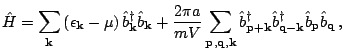
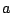
is the scattering length;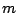
,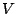
, are boson mass, system volume, chemical potential; and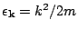
.
My first Ph.D. project concerned the calculation of the BEC transition temperature of a weakly repulsive Bose gas. The sign and form of the shift of
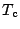
from the well-known ideal-gas value was only understood around 1999-2001, forty years after the first attempts: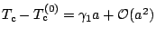
;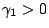
.
Our approach was to use second-order perturbation theory in a
quasiparticle basis on the un-condensed side, using the two-body
 -matrix. Our work (cond-mat/0212590) includes a reformulation of
one old calculation in modern diagrammatic language, analysis of an
alternate method for regularizing the infrared divergences appearing
at the transition point, and numerical results for a self-consistent
formulation.
-matrix. Our work (cond-mat/0212590) includes a reformulation of
one old calculation in modern diagrammatic language, analysis of an
alternate method for regularizing the infrared divergences appearing
at the transition point, and numerical results for a self-consistent
formulation.
I also wrote and put up a mini-review of calculation efforts (cond-mat/0302076); theorists who did later calculations have found this helpful.
During the last year of my Ph.D., I worked with my thesis advisor to understand the presence and interpretation of squeezing (in the quantum optics sense) in the condensed Bose gas. The method employed is variational. This work was postponed after I left Rutgers, but recently we smoothed out remaining details and are in the process of writing up an article which is expected be submitted around the end of January 2006.
Our main results are: (1) Squeezing of the condensate mode is absent at the mean-field Hartree-Fock-Bogoliubov level. (2) Condensate-mode squeezing is present (from beyond-mean-field contributions), but it has no thermodynamic effects. (3) We explore
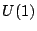
symmetry breaking and Goldstone's theorem in the context of a squeezed coherent variational wavefunction, and present the associated Ward identity. (4) The non-condensate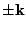
pair-mode squeezing is given a physical interpretation in terms of density-phase variables.
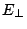
). We found that, at low densities and large , there is at least one structural transition to a lattice geometry different from the usual triangular one.Later, as postdocs in Europe, we discussed Wigner crystals (and 2D electrons on liquid surfaces) extensively, and tried to formulate calculations involving (1) quantum melting of the Wigner crystal, (2) the Cooper instability of the melted electron liquid in the quantum regime due to attraction mediated by ripplons (quantized surface vibrations). Unfortunately, we have been too busy with other projects to follow up, but there is a relatively simple calculation I want to do sometime in 2006. This involves calculating the response of the electron fluid after quantum melting (both in paired and un-paired states) to an experiment exciting coupled ripplon-electron modes, e.g., as in Refs. [12]. Since transport measurements are not natural for this system, it is important to be able to distinguish the BCS and unpaired phases from a ripplon scattering or equivalent experiment.
In recent years, methods have been invented for studying non-equilibrium one-dimensional systems by an extension of the Density-Matrix Renormalization Group (DMRG) method. In the world of cold atoms, experimentally accessible non-equilibrium and non-adiabatic processes are essentially endless, although truly 1D systems are not so readily realized yet.
With a Ph.D. student (R. Hagemans) at the University of Amsterdam, we are writing our own DMRG code. My junior collaborator is doing most of the coding, during biweekly evening sessions. This is mostly a learning process for me at this point, as I expect about a year before we have a usable program. However, once we do have DMRG code running, there is no shortage of non-adiabatic situations to analyze; I learn about new such problems at every cold-atoms meeting.
We are first writing some ``toy'' code for a Heisenberg XXX
antiferromagnet, to get used to density matrices, the truncation and
enlargement procedures, etc. Some code is posted at
http://www.phys.uu.nl/~haque/DMRG/.
First, with U. Al-Khawaja, a former postdoc at Utrecht, we have decided to look for exact solutions of time-dependent 1DGP equations, by identifying correct Lax pairs (matrices
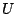
and such that the time-dependent 1DGP is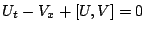
) or Hirota bilinears. The motivation is to find exact solutions that resemble the situations in two experiments performed in 2001 which produced solitonic trains by rapidly varying the interaction strength. Dr. Al-Khawaja was involved in past theory work concerning one of these experiments [13], and the current idea was motivated by a recent article [14] that presented an exact solution.The second project is a collaboration with Susanta K. Das, who was my thesis supervisor during my M.Sc. nuclear physics project in Bangladesh. After he decided to switch to a new topic of research, we identified solitons in two-component 1DGP's as a topic to investigate together. We expect to have a Ph.D. student work in Bangladesh on this topic.
Meera Parish (Cavendish, Cambridge U.K.) has done some calculations for uniform (not trapped) asymmetric pairing. We are in the process of identifying specific problems to work on together. Possibilities we have been discussing are (1) to work out the complete phase diagram across the BCS-BEC crossover and for a range of density asymmetries; (2) to calculate results for noise correlation experiments for various unconventionally-paired states.
With Indranil Paul (a long-time collaborator, now at Argonne, IL), the plan is to express unequal-density paired states in pseudospin language, and compare the spin states corresponding to various pairing schemes. This representation is also useful for visualizing various kinds of dynamics of paired states.
In the coming two or three years, I hope to continue to work on problems motivated by both laser-cooled atomic systems and by correlated-electrons systems. The topics I will give priority to, of course, depends on the interests of the group at my next postdoc position.
With the innovative experiments that have brought laser-cooled atomic systems within sight of sophisticated condensed-matter phenomena, this is an exciting time to be a many-body theorist thinking about cold-atom physics. Correlated-electrons systems, such as newly synthesized solids and artificial nanoscale structures, also continue to provide new challenges for theorists. Condensed-matter theory, the science of emergent phenomena in many-particle systems, is as vibrant as ever. I have enjoyed immensely my studies of this fascinating field, and I plan to continue and broaden my investigations of correlated matter.